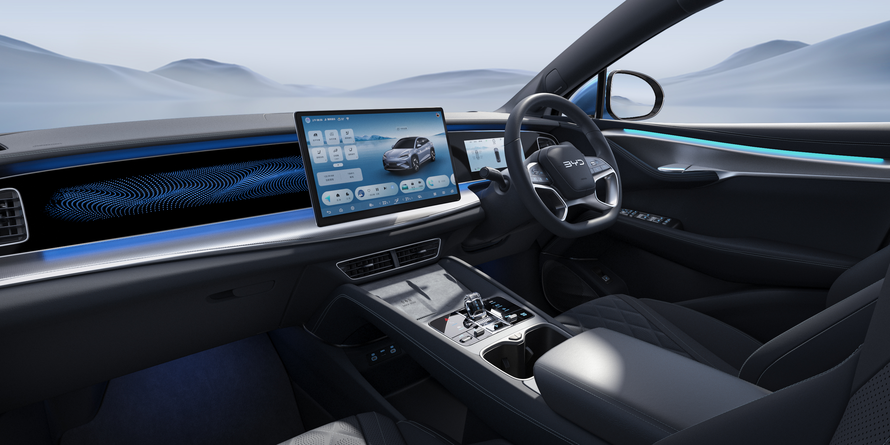
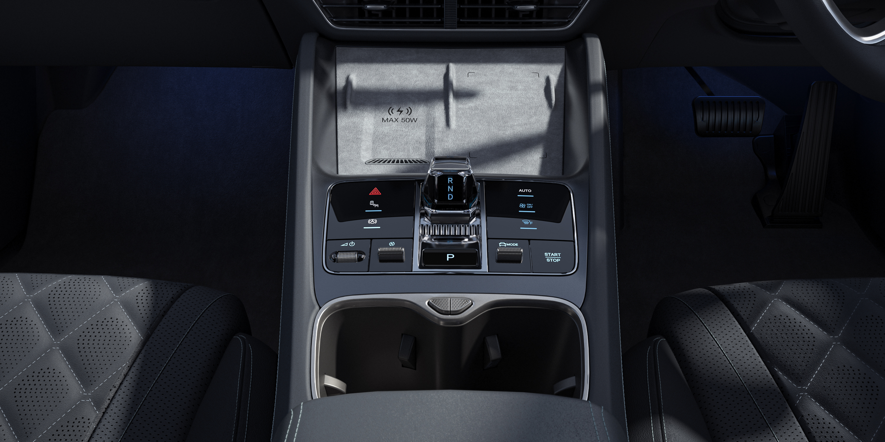
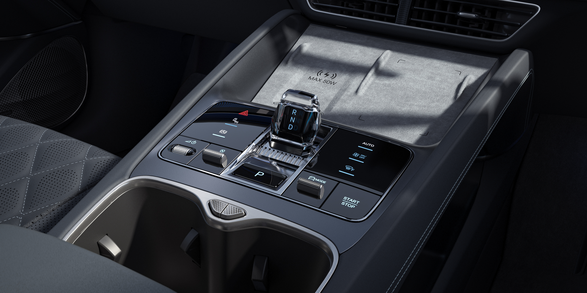

We created a 360-degree panoramic interior view of the BYD Sealion 07 Australian version. This initiative aims to provide users with an intuitive visual shopping experience.



PANORAMIC VIEW MONITOR
Tips: Hold down the mouse button and drag to move the view.
Press the Shift key to zoom in, and the Ctrl key to zoom out.